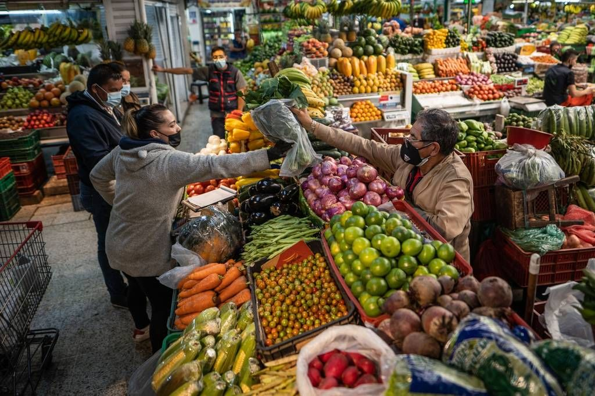
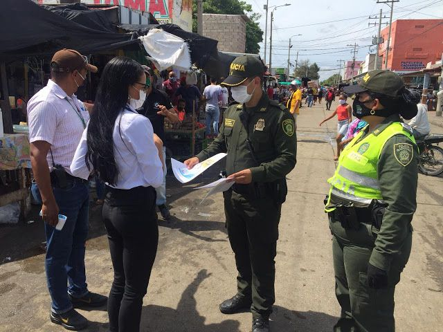

El Legado que Sigue Transformando
Obras Reales, Gestión Comprobada
Una gestión con resultados tangibles
La capacidad de gestión del Dr. Jorge Reyes no es una promesa, es un hecho. Estas son las obras y decisiones administrativas que marcaron un antes y un después en Loja.
Obras Clave de Mi Gestión

Infraestructura Estratégica Mayor
Obras que transformaron la fisonomía y funcionalidad de nuestra ciudad, mejorando la calidad de vida de todos los lojanos.
- Mercado Mayorista: Obra construida y entregada que dinamizó la economía del sur del país.
- Terminal Terrestre: Puesta en funcionamiento como eje de conectividad clave para la región.
Saneamiento y Calidad de Vida
Compromiso con el acceso a servicios básicos de calidad para todos los ciudadanos.
- Agua Potable: Gestión probada para garantizar la calidad y caudal para todos los barrios.
- Modernización UMAPAL: Prioridad en la modernización para un servicio transparente y eficiente.

Seguridad y Desarrollo Institucional
Inversión en infraestructura y formación para una ciudad más segura y organizada.
- Escuela de Seguridad: Establecimiento de la primera escuela de formación policial en la región.
- Muro de Sostenimiento: Construcción del Muro en Las Américas, obra de ingeniería para seguridad ciudadana.
Cifras que Hablan por Sí Solas
162
Sistemas de Alumbrado Urbano
59
Comunidades Rurales Beneficiadas
100%
Obras Entregadas en Tiempo
Un Legado que Perdura
Alcalde honesto que sí cumplió obras. Un legado de capacidad y servicio que sigue vigente.
Únete a Nuestro Proyecto